ERGM LAB: Social Networks and Health Workshop 2017
Preliminaries
Basis of Workshop and History of its Development
This tutorial is based on the Sunbelt 2016 version produced by the Statnet Development Team:
- Martina Morris (University of Washington)
- Mark S. Handcock (University of California, Los Angeles)
- Carter T. Butts (University of California, Irvine)
- David R. Hunter (Penn State University)
- Steven M. Goodreau (University of Washington)
- Skye Bender de-Moll (Oakland)
- Pavel N. Krivitsky (University of Wollongong)
For general questions and comments, please refer to statnet users group and mailing list http://statnet.csde.washington.edu/statnet_users_group.shtml.
Modifications have been made by Zack Almquist (University of Minnesota) for the Social Networks and Health Workshop at Duke University May 25th, 2017.
Installation and Getting Started
Open an R session (in this lab we assume that you are using RStudio and GitHub). We also recommend you install Latex (windows, OSX). Installing latex will allow you to compile pdf RMarkdown documents for reproducible lab reports.
knitr
To use fully appreciate this lab you will need the R package knitr:
install.packages("knitr")statnet
We will not be using all of statnet so you can choose to install: sna, network, ergm and coda only or you can install the full statnet package (commented out with #).
install.packages("sna")
install.packages("network")
install.packages("ergm")
install.packages("coda")
# install.packages('statnet')If you have the packages already installed, it is recommended that you update them:
update.packages("name.of.package")Loading the packages
library(ergm)
library(sna)
library(coda)Check package version
sessionInfo()Last, set seed for simulations. This is not necessary but it ensures that we all get the same results (if we execute the same commands in the same order).
set.seed(0)Statistical network modeling
Exponential-family random graph models (ERGMs) represent a general class of models based in exponential-family theory for specifying the probability distribution for a set of random graphs or networks. Within this framework, one can—among other tasks—obtain maximum-likehood estimates for the parameters of a specified model for a given data set; test individual models for goodness-of-fit, perform various types of model comparison; and simulate additional networks with the underlying probability distribution implied by that model.
The general form for an ERGM can be written as:
Pr(Y = y)=exp(θTg(y, X))/κ(θ)
where Y is the random variable for the state of the network (with realization y), g(y) is a vector of model statistics for network y, θ is the vector of coefficients for those statistics, and κ represents the quantity in the numerator summed over all possible networks (typically constrained to be all networks with the same node set as y).
This can be re-expressed in terms of the conditional log-odds of a single tie between two actors:
logit(Yij = 1|yijc)=θTδ(yij)
where Yij is the random variable for the state of the actor pair i,ji,j (with realization yij), and yijc signifies the complement of yij, i.e. all dyads in the network other than yij. The vector δ(yij) contains the “change statistic”" for each model term. The change statistic records how g(y) term changes if the yij tie is toggled on or off. So:
δ(yij)=g(yij+)−g(yij−)
where yij+ is defined as yijc along with yij set to 1, and yij− is defined as yijc along with yij set to 0. That is, δ(yij) equals the value of g(y) when yij = 1 minus the value of g(y) when yij = 0, but all other dyads are as in g(y).
This emphasizes that the coefficient θ can be interpreted as the log-odds of an individual tie conditional on all others.
The model terms g(y) are functions of network statistics that we hypothesize may be more or less common than what would be expected in a simple random graph (where all ties have the same probability). For example, specific degree distributions, or triad configurations, or homophily on nodal attributes. We will explore some of these terms in this tutorial.
One key distinction in model terms is worth keeping in mind: terms are either dyad independent or dyad dependent. Dyad independent terms (like nodal homophily terms) imply no dependence between dyads—the presence or absence of a tie may depend on nodal attributes, but not on the state of other ties. Dyad dependent terms (like degree terms, or triad terms), by contrast, imply dependence between dyads. Such terms have very different effects, and much of what is different about network models comes from the complex cascading effects that these terms introduce. A model with dyad dependent terms also requires a different estimation algorithm, and you will see some different components in the output.
We’ll start by running some simple models to demonstrate the use of the “summary” and “ergm” commands. The ergm package contains several network data sets that we will use for demonstration purposes here.
data(package = "ergm") # tells us the datasets in our packagesflorentine Data
data(florentine) # loads flomarriage and flobusiness data
flomarriage # Let's look at the flomarriage network properties Network attributes:
vertices = 16
directed = FALSE
hyper = FALSE
loops = FALSE
multiple = FALSE
bipartite = FALSE
total edges= 20
missing edges= 0
non-missing edges= 20
Vertex attribute names:
priorates totalties vertex.names wealth
No edge attributespar(mfrow = c(1, 2)) # Setup a 2 panel plot (for later)
plot(flomarriage, main = "Florentine Marriage", cex.main = 0.8) # Plot the flomarriage network
summary(flomarriage ~ edges) # Look at the $g(y)$ statistic for this modeledges
20 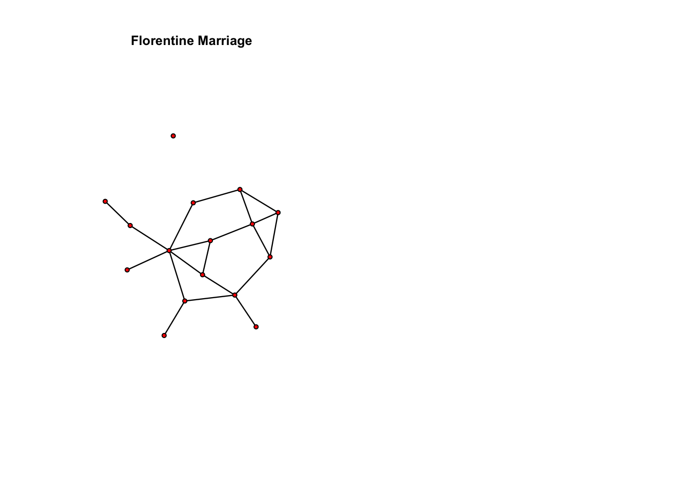
Bernoulli model
We begin with the simplest possible model, the Bernoulli or Erdos-Renyi model, which contains only one term to capture the density of the network as a function of a homogenous edge probability. The ergm-term for this is edges. We’ll fit this simple model to Padgett’s Florentine marriage network. As with all data analysis, we start by looking at our data: using graphical and numerical descriptives.
flomodel.01 <- ergm(flomarriage ~ edges) # Estimate the model Evaluating log-likelihood at the estimate. summary(flomodel.01) # The fitted model object
==========================
Summary of model fit
==========================
Formula: flomarriage ~ edges
Iterations: 5 out of 20
Monte Carlo MLE Results:
Estimate Std. Error MCMC % p-value
edges -1.6094 0.2449 0 <1e-04 ***
---
Signif. codes: 0 '***' 0.001 '**' 0.01 '*' 0.05 '.' 0.1 ' ' 1
Null Deviance: 166.4 on 120 degrees of freedom
Residual Deviance: 108.1 on 119 degrees of freedom
AIC: 110.1 BIC: 112.9 (Smaller is better.) How should we interpret the coefficient from this model? The log-odds of any tie existing is:
= − 1.6094379 × change in the number of ties
= − 1.6094379 × 1
Triad formation
Let’s add a term often thought to be a measure of “clustering”: the number of completed triangles. The ergm-term for this is triangle. This is a dyad dependent term. As a result, the estimation algorithm automatically changes to MCMC, and because this is a form of stochastic estimation your results may differ slightly.
summary(flomarriage ~ edges + triangle) # Look at the g(y) stats for this model edges triangle
20 3 flomodel.02 <- ergm(flomarriage ~ edges + triangle)Starting maximum likelihood estimation via MCMLE:
Iteration 1 of at most 20:
The log-likelihood improved by 0.005728
Step length converged once. Increasing MCMC sample size.
Iteration 2 of at most 20:
The log-likelihood improved by < 0.0001
Step length converged twice. Stopping.
Evaluating log-likelihood at the estimate. Using 20 bridges: 1 2 3 4 5 6 7 8 9 10 11 12 13 14 15 16 17 18 19 20 .
This model was fit using MCMC. To examine model diagnostics and check for degeneracy, use the mcmc.diagnostics() function.summary(flomodel.02)
==========================
Summary of model fit
==========================
Formula: flomarriage ~ edges + triangle
Iterations: 2 out of 20
Monte Carlo MLE Results:
Estimate Std. Error MCMC % p-value
edges -1.6694 0.3521 0 <1e-04 ***
triangle 0.1532 0.5771 0 0.791
---
Signif. codes: 0 '***' 0.001 '**' 0.01 '*' 0.05 '.' 0.1 ' ' 1
Null Deviance: 166.4 on 120 degrees of freedom
Residual Deviance: 108.1 on 118 degrees of freedom
AIC: 112.1 BIC: 117.7 (Smaller is better.) Now, how should we interpret coefficients?
The conditional log-odds of two actors having a tie is:
−1.6693954 × change in the number of ties + 0.153229 × change in the number of triangles
- For a tie that will create no triangles, the conditional log-odds is: -1.6693954
- if one triangle: -1.6693954 + 0.153229 = -1.5161664
- if two trianlgles: -1.6693954 + 0.153229 ×2= -1.3629374
- the corresponding probabilities are 0.16, 0.18, 0.2.
Let’s take a closer look at the ergm object itself:
class(flomodel.02) # this has the class ergm[1] "ergm"names(flomodel.02) # the ERGM object contains lots of components. [1] "coef" "sample" "sample.obs" "iterations"
[5] "MCMCtheta" "loglikelihood" "gradient" "hessian"
[9] "covar" "failure" "network" "newnetworks"
[13] "newnetwork" "coef.init" "est.cov" "coef.hist"
[17] "stats.hist" "steplen.hist" "control" "etamap"
[21] "formula" "target.stats" "target.esteq" "constrained"
[25] "constraints" "reference" "estimate" "offset"
[29] "drop" "estimable" "null.lik" "mle.lik" flomodel.02$coef # you can extract/inspect individual components edges triangle
-1.669395 0.153229 Nodal covariates: effects on mean degree
We can test whether edge probabilities are a function of wealth. This is a nodal covariate, so we use the ergm-term nodecov.
wealth <- flomarriage %v% "wealth" # %v% references vertex attributes
wealth [1] 10 36 55 44 20 32 8 42 103 48 49 3 27 10 146 48summary(wealth) # summarize the distribution of wealth Min. 1st Qu. Median Mean 3rd Qu. Max.
3.00 17.50 39.00 42.56 48.25 146.00 plot(flomarriage, vertex.cex = wealth/25, main = "Florentine marriage by wealth",
cex.main = 0.8) # network plot with vertex size proportional to wealth
summary(flomarriage ~ edges + nodecov("wealth")) edges nodecov.wealth
20 2168 # observed statistics for the model
flomodel.03 <- ergm(flomarriage ~ edges + nodecov("wealth"))Evaluating log-likelihood at the estimate. summary(flomodel.03)
==========================
Summary of model fit
==========================
Formula: flomarriage ~ edges + nodecov("wealth")
Iterations: 4 out of 20
Monte Carlo MLE Results:
Estimate Std. Error MCMC % p-value
edges -2.594929 0.536056 0 <1e-04 ***
nodecov.wealth 0.010546 0.004674 0 0.0259 *
---
Signif. codes: 0 '***' 0.001 '**' 0.01 '*' 0.05 '.' 0.1 ' ' 1
Null Deviance: 166.4 on 120 degrees of freedom
Residual Deviance: 103.1 on 118 degrees of freedom
AIC: 107.1 BIC: 112.7 (Smaller is better.) 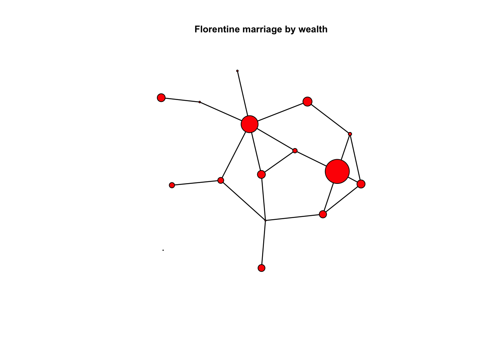
Yes, there is a significant positive wealth effect on the probability of a tie.
How do we interpret the coefficients here? Note that the wealth effect operates on both nodes in a dyad. The conditional log-odds of a tie between two actors is:
−2.594929 × change in the number of ties + 0.0105459 × the wealth of node 1 + 0.0105459 × the wealth of node 2
−2.594929 × change in the number of ties + 0.0105459 × the sum of the wealth of the two nodes
- for a tie between two nodes with minimum wealth, the conditional log-odds is:
- -2.594929 + 0.0105459 ×(3 + 3)= -2.5316536
- for a tie between two nodes with maximum wealth:
- -2.594929 + 0.0105459 ×(146 + 146)= 0.4844775
- for a tie between the node with maximum wealth and the node with minimum wealth:
- -2.594929 + 0.0105459 ×(146 + 3)= -1.023588
- The corresponding probabilities are 0.07, 0.62, 0.26
Note: This model specification does not include a term for homophily by wealth. It just specifies a relation between wealth and mean degree. To specify homophily on wealth, you would use the ergm-term absdiff see section below for more information on ergm-terms.
Faux Mesa High
Let’s try a larger network, a simulated mutual friendship network based on one of the schools from the Add Health study.
data(faux.mesa.high)
mesa <- faux.mesa.highmesa Network attributes:
vertices = 205
directed = FALSE
hyper = FALSE
loops = FALSE
multiple = FALSE
bipartite = FALSE
total edges= 203
missing edges= 0
non-missing edges= 203
Vertex attribute names:
Grade Race Sex
No edge attributespar(mfrow = c(1, 1)) # Back to 1-panel plots
plot(mesa, vertex.col = "Grade")
legend("bottomleft", fill = 7:12, legend = paste("Grade", 7:12), cex = 0.75)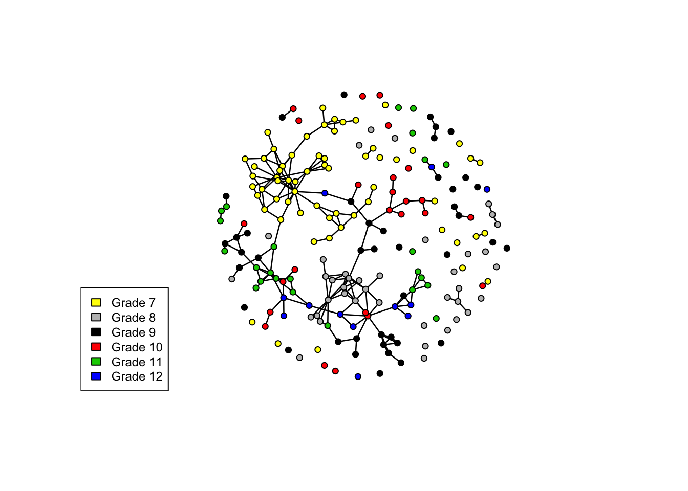
Here, we’ll examine the homophily in friendships by grade and race. Both are discrete attributes so we use the ergm-term nodematch.
fauxmodel.01 <- ergm(mesa ~ edges + nodematch("Grade", diff = T) + nodematch("Race",
diff = T))Observed statistic(s) nodematch.Race.Black and nodematch.Race.Other are at their smallest attainable values. Their coefficients will be fixed at -Inf.
Evaluating log-likelihood at the estimate. summary(fauxmodel.01)
==========================
Summary of model fit
==========================
Formula: mesa ~ edges + nodematch("Grade", diff = T) + nodematch("Race",
diff = T)
Iterations: 8 out of 20
Monte Carlo MLE Results:
Estimate Std. Error MCMC % p-value
edges -6.2328 0.1742 0 <1e-04 ***
nodematch.Grade.7 2.8740 0.1981 0 <1e-04 ***
nodematch.Grade.8 2.8788 0.2391 0 <1e-04 ***
nodematch.Grade.9 2.4642 0.2647 0 <1e-04 ***
nodematch.Grade.10 2.5692 0.3770 0 <1e-04 ***
nodematch.Grade.11 3.2921 0.2978 0 <1e-04 ***
nodematch.Grade.12 3.8376 0.4592 0 <1e-04 ***
nodematch.Race.Black -Inf 0.0000 0 <1e-04 ***
nodematch.Race.Hisp 0.0679 0.1737 0 0.6959
nodematch.Race.NatAm 0.9817 0.1842 0 <1e-04 ***
nodematch.Race.Other -Inf 0.0000 0 <1e-04 ***
nodematch.Race.White 1.2685 0.5371 0 0.0182 *
---
Signif. codes: 0 '***' 0.001 '**' 0.01 '*' 0.05 '.' 0.1 ' ' 1
Null Deviance: 28987 on 20910 degrees of freedom
Residual Deviance: 1928 on 20898 degrees of freedom
AIC: 1952 BIC: 2047 (Smaller is better.)
Warning: The following terms have infinite coefficient estimates:
nodematch.Race.Black nodematch.Race.Other Note that two of the coefficients are estimated as -Inf (the nodematch coefficients for race Black and Other). Why is this?
table(mesa %v% "Race") # Frequencies of race
Black Hisp NatAm Other White
6 109 68 4 18 mixingmatrix(mesa, "Race")Note: Marginal totals can be misleading
for undirected mixing matrices.
Black Hisp NatAm Other White
Black 0 8 13 0 5
Hisp 8 53 41 1 22
NatAm 13 41 46 0 10
Other 0 1 0 0 0
White 5 22 10 0 4The problem is that there are very few students in the Black and Other race categories, and these few students form no within-group ties. The empty cells are what produce the -Inf estimates.
Note that we would have caught this earlier if we had looked at the g(y) stats at the beginning:
summary(mesa ~ edges + nodematch("Grade", diff = T) + nodematch("Race", diff = T)) edges nodematch.Grade.7 nodematch.Grade.8
203 75 33
nodematch.Grade.9 nodematch.Grade.10 nodematch.Grade.11
23 9 17
nodematch.Grade.12 nodematch.Race.Black nodematch.Race.Hisp
6 0 53
nodematch.Race.NatAm nodematch.Race.Other nodematch.Race.White
46 0 4 Moral: It’s a good idea to check the descriptive statistics of a model in the observed network before fitting the model.
See also the ergm-term nodemix for fitting mixing patterns other than homophily on discrete nodal attributes.
Sampson Monk Data
Directed ties
Let’s try a model for a directed network, and examine the tendency for ties to be reciprocated (“mutuality”). The ergm-term for this is mutual. We’ll fit this model to the third wave of the classic Sampson Monastery data, and we’ll start by taking a look at the network.
data(samplk)
ls() # directed data: Sampson's Monks [1] "faux.mesa.high" "fauxmodel.01" "flobusiness" "flomarriage"
[5] "flomodel.01" "flomodel.02" "flomodel.03" "ilogit"
[9] "logit" "mesa" "samplk1" "samplk2"
[13] "samplk3" "wealth" samplk3 Network attributes:
vertices = 18
directed = TRUE
hyper = FALSE
loops = FALSE
multiple = FALSE
bipartite = FALSE
total edges= 56
missing edges= 0
non-missing edges= 56
Vertex attribute names:
cloisterville group vertex.names
No edge attributesplot(samplk3)
summary(samplk3 ~ edges + mutual) edges mutual
56 15 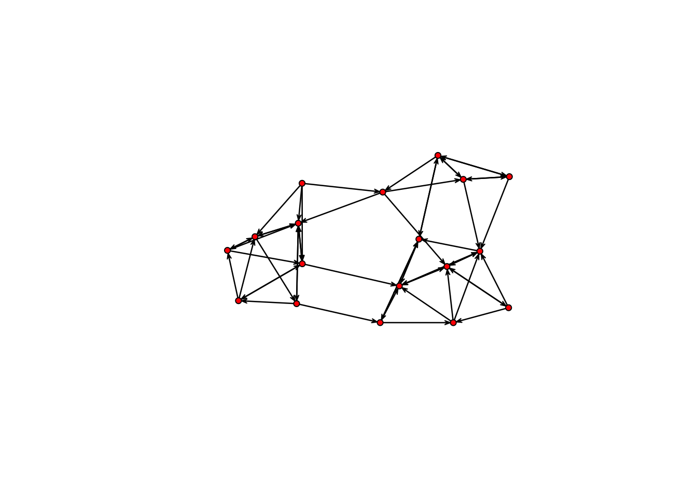
The plot now shows the direction of a tie, and the g(y) statistics for this model in this network are 56 total ties, and 15 mutual dyads (so 30 of the 56 ties are mutual ties).
sampmodel.01 <- ergm(samplk3 ~ edges + mutual)Starting maximum likelihood estimation via MCMLE:
Iteration 1 of at most 20:
The log-likelihood improved by 0.001367
Step length converged once. Increasing MCMC sample size.
Iteration 2 of at most 20:
The log-likelihood improved by 0.002444
Step length converged twice. Stopping.
Evaluating log-likelihood at the estimate. Using 20 bridges: 1 2 3 4 5 6 7 8 9 10 11 12 13 14 15 16 17 18 19 20 .
This model was fit using MCMC. To examine model diagnostics and check for degeneracy, use the mcmc.diagnostics() function.summary(sampmodel.01)
==========================
Summary of model fit
==========================
Formula: samplk3 ~ edges + mutual
Iterations: 2 out of 20
Monte Carlo MLE Results:
Estimate Std. Error MCMC % p-value
edges -2.1580 0.2184 0 <1e-04 ***
mutual 2.3044 0.4850 0 <1e-04 ***
---
Signif. codes: 0 '***' 0.001 '**' 0.01 '*' 0.05 '.' 0.1 ' ' 1
Null Deviance: 424.2 on 306 degrees of freedom
Residual Deviance: 267.6 on 304 degrees of freedom
AIC: 271.6 BIC: 279.1 (Smaller is better.) There is a strong and significant mutuality effect. The coefficients for the edges and mutual terms roughly cancel for a mutual tie, so the conditional odds of a mutual tie are about even, and the probability is about 0.5365313 %. By contrast a non-mutual tie has a conditional log-odds of 0.1035891, or 0.1035891 % probability.
Triangle terms in directed networks can have many different configurations, given the directional ties. Many of these configurations are coded up as ergm-terms (and we’ll talk about these more below).
Missing Data Example
It is important to distinguish between the absence of a tie, and the absence of data on whether a tie exists. You should not code both of these as “0”. The ergmergm package recognizes and handles missing data appropriately, as long as you identify the data as missing. Let’s explore this with a simple example.
Let’s start with estimating an ergm on a network with two missing ties, where both ties are identified as missing.
missnet <- network.initialize(10, directed = F)
missnet[1, 2] <- missnet[2, 7] <- missnet[3, 6] <- 1
missnet[4, 6] <- missnet[4, 9] <- missnet[5, 6] <- NA
summary(missnet)Network attributes:
vertices = 10
directed = FALSE
hyper = FALSE
loops = FALSE
multiple = FALSE
bipartite = FALSE
total edges = 6
missing edges = 3
non-missing edges = 3
density = 0.06666667
Vertex attributes:
vertex.names:
character valued attribute
10 valid vertex names
No edge attributes
Network adjacency matrix:
1 2 3 4 5 6 7 8 9 10
1 0 1 0 0 0 0 0 0 0 0
2 1 0 0 0 0 0 1 0 0 0
3 0 0 0 0 0 1 0 0 0 0
4 0 0 0 0 0 NA 0 0 NA 0
5 0 0 0 0 0 NA 0 0 0 0
6 0 0 1 NA NA 0 0 0 0 0
7 0 1 0 0 0 0 0 0 0 0
8 0 0 0 0 0 0 0 0 0 0
9 0 0 0 NA 0 0 0 0 0 0
10 0 0 0 0 0 0 0 0 0 0# plot missnet with missing edge colored red.
tempnet <- missnet
tempnet[4, 6] <- tempnet[4, 9] <- tempnet[5, 6] <- 1
missnetmat <- as.matrix(missnet)
missnetmat[is.na(missnetmat)] <- 2
plot(tempnet, label = network.vertex.names(tempnet), edge.col = missnetmat)
summary(missnet ~ edges)edges
3 summary(missnet.01 <- ergm(missnet ~ edges))Evaluating log-likelihood at the estimate.
==========================
Summary of model fit
==========================
Formula: missnet ~ edges
Iterations: 5 out of 20
Monte Carlo MLE Results:
Estimate Std. Error MCMC % p-value
edges -2.5649 0.5991 0 0.000109 ***
---
Signif. codes: 0 '***' 0.001 '**' 0.01 '*' 0.05 '.' 0.1 ' ' 1
Null Deviance: 58.22 on 42 degrees of freedom
Residual Deviance: 21.61 on 41 degrees of freedom
AIC: 23.61 BIC: 25.35 (Smaller is better.) 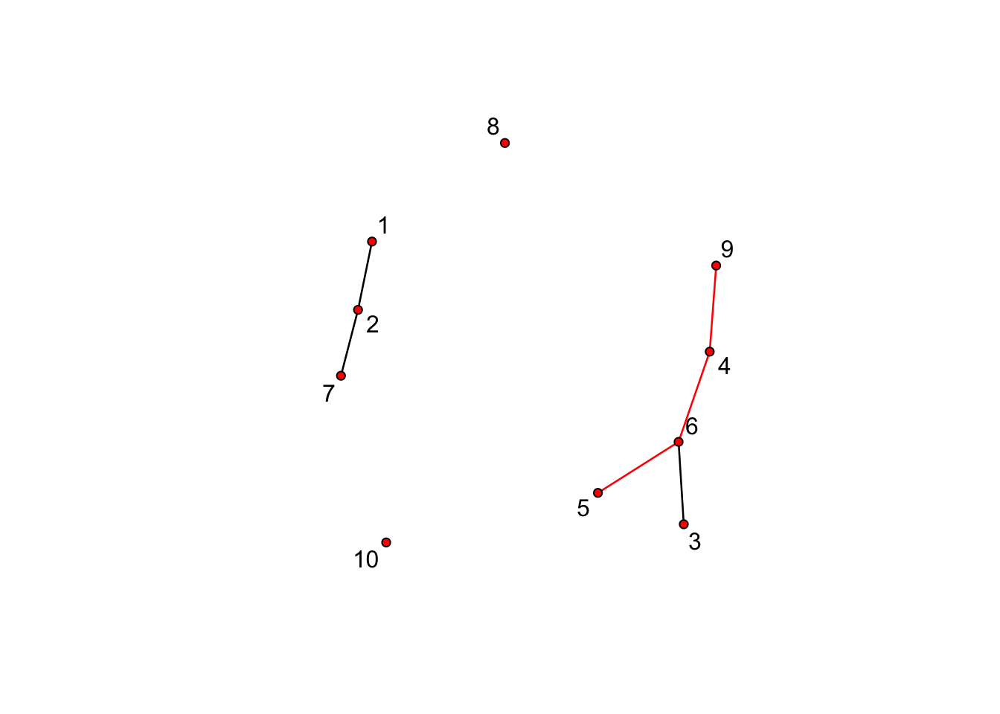
missnet_bad <- missnet
missnet_bad[4, 6] <- missnet_bad[4, 9] <- missnet_bad[5, 6] <- 0
summary(missnet_bad)Network attributes:
vertices = 10
directed = FALSE
hyper = FALSE
loops = FALSE
multiple = FALSE
bipartite = FALSE
total edges = 3
missing edges = 0
non-missing edges = 3
density = 0.06666667
Vertex attributes:
vertex.names:
character valued attribute
10 valid vertex names
No edge attributes
Network adjacency matrix:
1 2 3 4 5 6 7 8 9 10
1 0 1 0 0 0 0 0 0 0 0
2 1 0 0 0 0 0 1 0 0 0
3 0 0 0 0 0 1 0 0 0 0
4 0 0 0 0 0 0 0 0 0 0
5 0 0 0 0 0 0 0 0 0 0
6 0 0 1 0 0 0 0 0 0 0
7 0 1 0 0 0 0 0 0 0 0
8 0 0 0 0 0 0 0 0 0 0
9 0 0 0 0 0 0 0 0 0 0
10 0 0 0 0 0 0 0 0 0 0summary(missnet.02 <- ergm(missnet_bad ~ edges))Evaluating log-likelihood at the estimate.
==========================
Summary of model fit
==========================
Formula: missnet_bad ~ edges
Iterations: 5 out of 20
Monte Carlo MLE Results:
Estimate Std. Error MCMC % p-value
edges -2.6391 0.5976 0 <1e-04 ***
---
Signif. codes: 0 '***' 0.001 '**' 0.01 '*' 0.05 '.' 0.1 ' ' 1
Null Deviance: 62.38 on 45 degrees of freedom
Residual Deviance: 22.04 on 44 degrees of freedom
AIC: 24.04 BIC: 25.85 (Smaller is better.) The coefficient is smaller now because the missing ties are counted as “0”, and translates to a conditional tie probability of 0.07%. It’s a small difference in this case (and a small network, with little missing data).
MORAL: If you have missing data on ties, be sure to identify them by assigning the “NA”" code. This is particularly important if you’re reading in data as an edgelist, as all dyads without edges are implicitly set to “0”" in this case.
ERGM TERMS
Model terms are the expressions (e.g. “triangle”) used to represent predictors on the right-hand size of equations used in:
- calls to summary (to obtain measurements of network statistics on a dataset)
- calls to ergm (to estimate an ergm model)
- calls to simulate (to simulate networks from an ergm model fit)
Many ERGM terms are simple counts of configurations (e.g., edges, nodal degrees, stars, triangles), but others are more complex functions of these configurations (e.g., geometrically weighted degrees and shared partners). In theory, any configuration (or function of configurations) can be a term in an ERGM. In practice, however, these terms have to be constructed before they can be used—that is, one has to explicitly write an algorithm that defines and calculates the network statistic of interest. This is another key way that ERGMs differ from traditional linear and general linear models.
The terms that can be used in a model also depend on the type of network being analyzed: directed or undirected, one-mode or two-mode (“bipartite”), binary or valued edges.
Terms provided with ergm
For a list of available terms that can be used to specify an ERGM, type:
help("ergm-terms")A table of commonly used terms can be found here.
A more complete discussion of many of these terms can be found in the ‘Specifications’ paper in the Journal of Statistical Software v24(4).
Finally, note that models with only dyad independent terms are estimated in statnet using a logistic regression algorithm to maximize the likelihood. Dyad dependent terms require a different approach to estimation, which, in statnet, is based on a Monte Carlo Markov Chain (MCMC) algorithm that stochastically approximates the Maximum Likelihood.
Coding new ergm-terms
statnet has recently released a new package (ergm.userterms) that makes it much easier to write one’s own ergm-terms. The package is available on CRAN, and installing it will include the tutorial (ergmuserterms.pdf). Alternatively, the tutorial can be found in the Journal of Statistical Software 52(2).
Note that writing up new ergm terms requires some knowledge of C and the ability to build R from source (although the latter is covered in the tutorial, the many environments for building R and the rapid changes in these environments make these instructions obsolete quickly).
Goodness of Fit
Network simulation: the simulate command and network.list objects
Once we have estimated the coefficients of an ERGM, the model is completely specified. It defines a probability distribution across all networks of this size. If the model is a good fit to the observed data, then networks drawn from this distribution will be more likely to “resemble”" the observed data. To see examples of networks drawn from this distribution we use the simulate command:
flomodel.03.sim <- simulate(flomodel.03, nsim = 10)
class(flomodel.03.sim)[1] "network.list"summary(flomodel.03.sim)Number of Networks: 10
Model: flomarriage ~ edges + nodecov("wealth")
Reference: ~Bernoulli
Constraints: ~.
Parameters:
edges nodecov.wealth
-2.59492903 0.01054591
Stored network statistics:
edges nodecov.wealth
[1,] 19 1967
[2,] 17 1548
[3,] 18 1566
[4,] 25 3107
[5,] 13 1495
[6,] 17 1978
[7,] 27 2876
[8,] 18 2037
[9,] 24 2448
[10,] 22 2310length(flomodel.03.sim)[1] 10flomodel.03.sim[[1]] Network attributes:
vertices = 16
directed = FALSE
hyper = FALSE
loops = FALSE
multiple = FALSE
bipartite = FALSE
total edges= 19
missing edges= 0
non-missing edges= 19
Vertex attribute names:
priorates totalties vertex.names wealth
No edge attributesplot(flomodel.03.sim[[1]], label = flomodel.03.sim[[1]] %v% "vertex.names")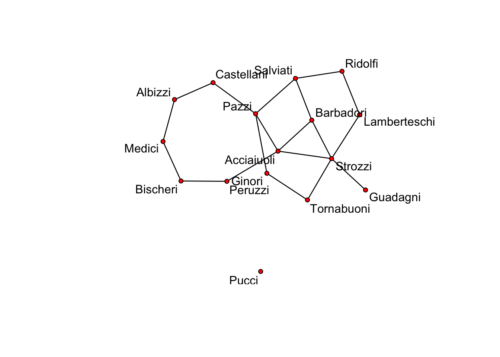
Voila. Of course, yours will look somewhat different.
Simulation can be used for many purposes: to examine the range of variation that could be expected from this model, both in the sufficient statistics that define the model, and in other statistics not explicitly specified by the model. Simulation will play a large role in analyizing egocentrically sampled data in section below. And if you take the tergm workshop, you will see how we can use simulation to examine the temporal implications of a model based on a single cross-sectional egocentrically sampled dataset.
For now, we will examine one of the primary uses of simulation in the ergm package: using simulated data from the model to evaluate goodness of fit to the observed data.
Examining the quality of model fit - GOF
There are two types of goodness of fit (GOF) tests in ergm. The first, and one you’ll always want to run, is used to evaluate how well the estimates are reproducing the terms that are in the model. These are maximum likelihood estimates, so they should reproduce the observed sufficient statistics well, and if they don’t it’s an indication that something may be wrong in the estimation process. Assuming all is well here, you can move on to the next step.
The second type of GOF test is used to see how well the model fits other emergent patterns in your network data, patterns that are not explicitly represented by the terms in the model. ERGMs are cross-sectional; they don’t directly model the process of tie formation and dissolution (that would be a temporal ergm (TERGM), see the tergm package). But ERGMs can be seen as generative models in another sense: they represent the process that governs the emergent global pattern of ties from a local perspective.
To see this, it’s worth digging a bit deeper into the MCMC estimation process. When you estimate an ERGM in statnet, the MCMC algorithm at each step draws a dyad at random, and evaluates the probability of a tie from the perspective of these two nodes. That probability is governed by the ergm-terms in the model, and the current estimates of the coefficients on these terms. Once the estimates converge, simulations from the model will produce networks that are centered on the observed model statistics (as we saw above), but the networks will also have other emergent global properties, even though these global properties are not represented by explicit terms in the model. If the local processes represented by the model terms capture the true underlying process, the model should reproduce these global properties as well.
So the second of whether a local model “fits the data” is to evaluate how well it reproduces observed global network properties that are not in the model. We do this by choosing network statistics that are not in the model, and comparing the value observed in the original network to the distribution of values we get in simulated networks from our model.
Both types of tests can be conducted by using the gof function. The gof function is a bit different than the summary, ergm, and simulate functions, in that it currently only takes 4 possible arguments: model, degree, esp (edgwise share partners), and distance (geodesic distances). “model” uses gof to evaluate the fit to the terms in the model, and the other 3 terms are used to evaluate the fit to emergent global network properties, at either the node level (degree), the edge level (esp), or the dyad level (distance). Note that these 3 global terms represent distributions, not single number summary statistics.
Let’s start by looking at how to assess the fit of the model to the terms in the model, using model 3 from the flomarriage example ().
flo.03.gof.model <- gof(flomodel.03 ~ model)
flo.03.gof.model
Goodness-of-fit for model statistics
obs min mean max MC p-value
edges 20 12 20.16 29 1.00
nodecov.wealth 2168 1137 2196.11 3160 0.98plot(flo.03.gof.model)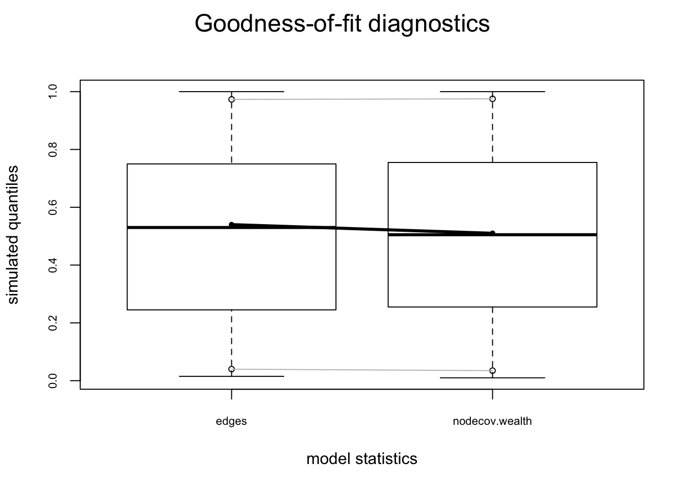
Looks pretty good. Now let’s look at the fit to the 3 global network terms that are not in the model.
flo.03.gof.global <- gof(flomodel.03 ~ degree + esp + distance)
flo.03.gof.global
Goodness-of-fit for degree
obs min mean max MC p-value
0 1 0 1.28 5 1.00
1 4 0 3.18 8 0.80
2 2 1 4.32 11 0.22
3 6 0 3.54 8 0.26
4 2 0 2.13 5 1.00
5 0 0 0.90 3 0.86
6 1 0 0.43 3 0.66
7 0 0 0.13 1 1.00
8 0 0 0.05 1 1.00
9 0 0 0.03 1 1.00
10 0 0 0.01 1 1.00
Goodness-of-fit for edgewise shared partner
obs min mean max MC p-value
esp0 12 1 12.52 24 1.00
esp1 7 0 5.78 17 0.76
esp2 1 0 1.35 10 1.00
esp3 0 0 0.17 2 1.00
esp4 0 0 0.04 1 1.00
Goodness-of-fit for minimum geodesic distance
obs min mean max MC p-value
1 20 12 19.86 31 1.00
2 35 12 33.37 59 0.84
3 32 7 27.28 41 0.56
4 15 0 11.89 25 0.62
5 3 0 3.62 16 0.94
6 0 0 0.92 8 1.00
7 0 0 0.23 5 1.00
8 0 0 0.06 2 1.00
Inf 15 0 22.77 82 1.00plot(flo.03.gof.global)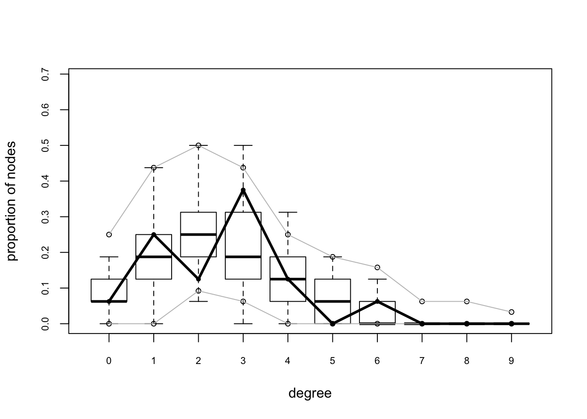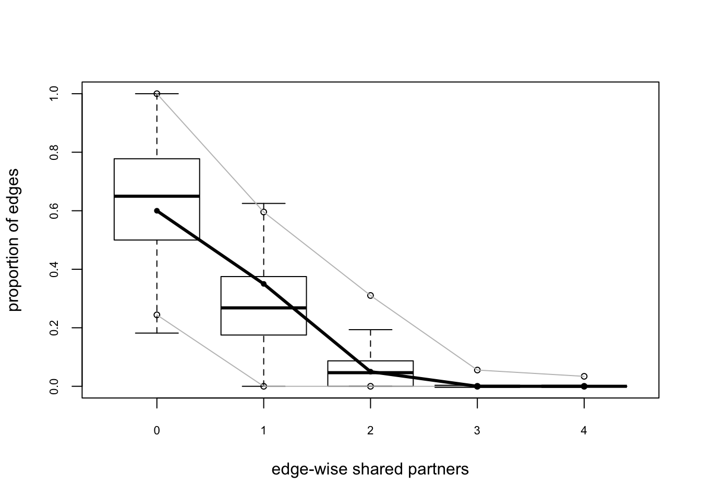 These look pretty good too.
These look pretty good too.
Let’s compare this to a simple Bernoulli model for faux.mesa.high.
mesamodel.b <- ergm(mesa ~ edges)Evaluating log-likelihood at the estimate. plot(gof(mesamodel.b ~ model, nsim = 10))
plot(gof(mesamodel.b ~ degree + esp + distance, nsim = 10))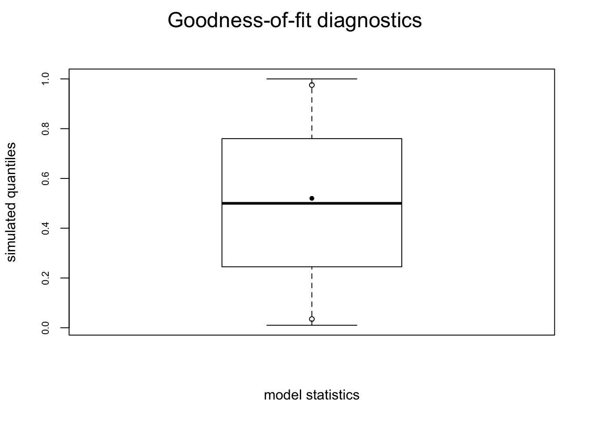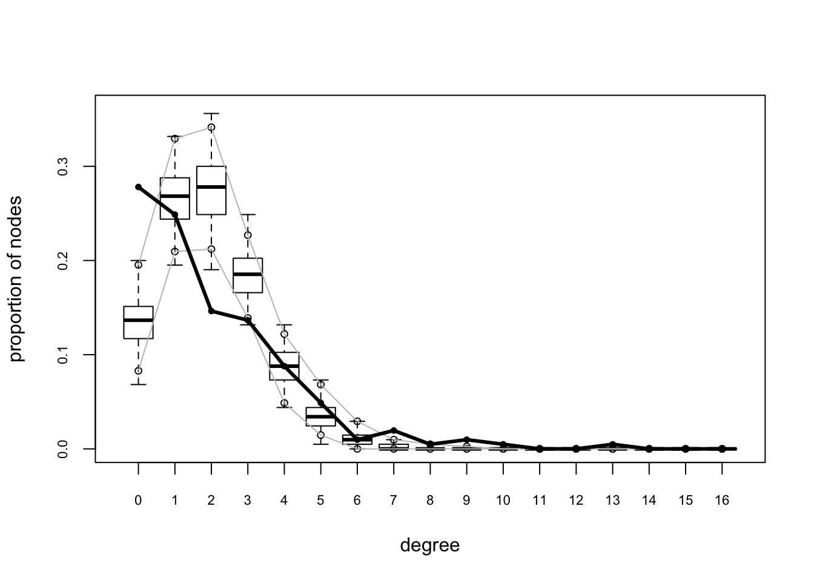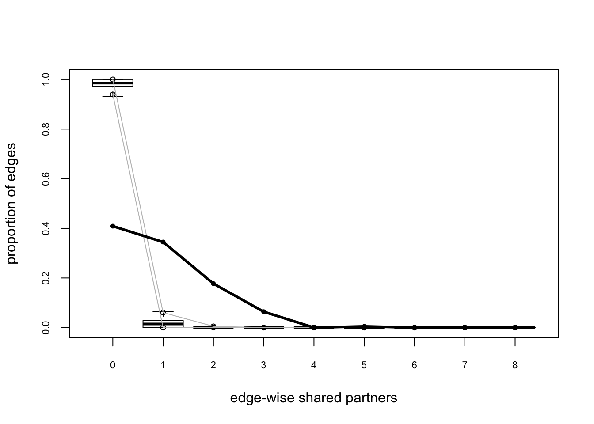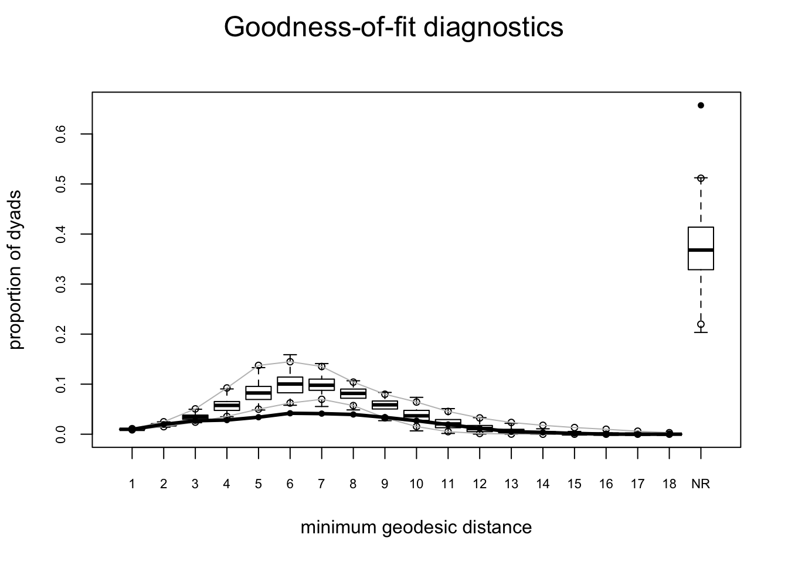
These plots suggest this is not a very good model – while it reproduces the edges term included in the model (which means all is well with the estimation) it does not do a good job of capturing the rest of the network structure.
For a good example of model exploration and fitting for the Add Health Friendship networks, see Goodreau, Kitts & Morris, Demography 2009. For more technical details on the approach, see Hunter, Goodreau and Handcock JASA 2008
MCMC Diagnostics
Diagnostics: troubleshooting and checking for model degeneracy
he computational algorithms in ergm use MCMC to estimate the likelihood function when dyad dependent terms are in the model. Part of this process involves simulating a set of networks to use as a sample for approximating the unknown component of the likelihood: the κ(θ) term in the denominator.
When a model is not a good representation of the observed network, these simulated networks may be far enough away from the observed network that the estimation process is affected. In the worst case scenario, the simulated networks will be so different that the algorithm fails altogether.
For more detailed discussion of model degeneracy in the ERGM context, see the papers by Mark Handcock referenced at the end of this tutorial.
In the worst case scenario, we end up not being able to obtain coefficent estimates, so we can’t use the GOF function to identify how the model simulations deviate from the observed data. In this case, however, we can use the MCMC diagnostics to observe what is happening with the simulation algorithm, and this (plus some experience and intuition about the behavior of ergm-terms) can help us improve the model specification.
Below we show a simple example of a model that converges, and one that doesn’t, and how to use the MCMC diagnostics to improve a model that isn’t converging.
What it looks like when a model converges properly
We will first consider a simulation where the algorithm works using the program defaults, and observe the behavior of the MCMC estimation algorithm using the mcmc.diagnostics function. This function allows youto evaluate how well the estimation algorithm is “mixing’ – that is, how much serial correlation there is in the MCMC sample estimates – and whether it is converging around an estimate, or heading off in a trend up or down. The latter is an indication of poor (or no) model convergence.
summary(flobusiness ~ edges + degree(1)) edges degree1
15 3 fit <- ergm(flobusiness ~ edges + degree(1))Starting maximum likelihood estimation via MCMLE:
Iteration 1 of at most 20:
The log-likelihood improved by 0.2464
Step length converged once. Increasing MCMC sample size.
Iteration 2 of at most 20:
The log-likelihood improved by 0.00053
Step length converged twice. Stopping.
Evaluating log-likelihood at the estimate. Using 20 bridges: 1 2 3 4 5 6 7 8 9 10 11 12 13 14 15 16 17 18 19 20 .
This model was fit using MCMC. To examine model diagnostics and check for degeneracy, use the mcmc.diagnostics() function.mcmc.diagnostics(fit)Sample statistics summary:
Iterations = 16384:4209664
Thinning interval = 1024
Number of chains = 1
Sample size per chain = 4096
1. Empirical mean and standard deviation for each variable,
plus standard error of the mean:
Mean SD Naive SE Time-series SE
edges -0.009766 3.827 0.05979 0.05821
degree1 -0.046631 1.655 0.02585 0.02585
2. Quantiles for each variable:
2.5% 25% 50% 75% 97.5%
edges -8 -3 0 3 7
degree1 -3 -1 0 1 4
Sample statistics cross-correlations:
edges degree1
edges 1.0000000 -0.4312164
degree1 -0.4312164 1.0000000
Sample statistics auto-correlation:
Chain 1
edges degree1
Lag 0 1.000000000 1.000000000
Lag 1024 0.009865979 -0.020878377
Lag 2048 0.015602982 0.006414098
Lag 3072 -0.037665576 0.006312219
Lag 4096 0.018920791 -0.004388454
Lag 5120 0.014384065 -0.034187385
Sample statistics burn-in diagnostic (Geweke):
Chain 1
Fraction in 1st window = 0.1
Fraction in 2nd window = 0.5
edges degree1
0.8425 -1.4004
Individual P-values (lower = worse):
edges degree1
0.3995059 0.1613930
Joint P-value (lower = worse): 0.3578897 .
MCMC diagnostics shown here are from the last round of simulation, prior to computation of final parameter estimates. Because the final estimates are refinements of those used for this simulation run, these diagnostics may understate model performance. To directly assess the performance of the final model on in-model statistics, please use the GOF command: gof(ergmFitObject, GOF=~model).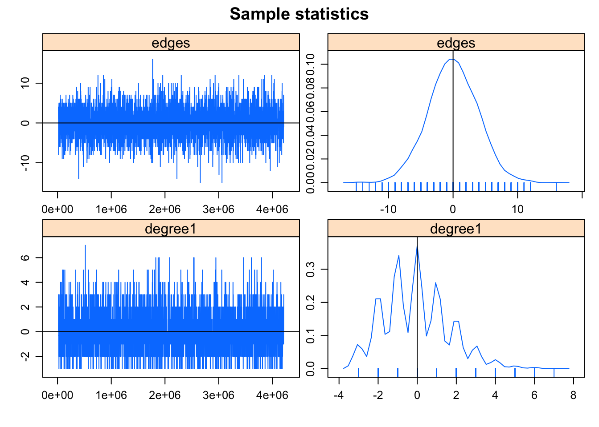
This is what you want to see in the MCMC diagnostics: the MCMC sample statistics are varying randomly around the observed values at each step (so the chain is “mixing” well) and the difference between the observed and simulated values of the sample statistics have a roughly bell-shaped distribution, centered at 0. The sawtooth pattern visible on the degree term deviation plot is due to the combination of discrete values and small range in the statistics: the observed number of degree 1 nodes is 3, and only a few discrete values are produced by the simulations. So the sawtooth pattern is is an inherent property of the statistic, not a problem with the fit.
There are many control parameters for the MCMC algorithm (“help(control.ergm)”), and we’ll play with some of these below. To see what the algorithm is doing at each step, you can drop the sampling interval down to 1:
summary(bad.model <- ergm(flobusiness ~ edges + degree(1), control = control.ergm(MCMC.interval = 1)))Starting maximum likelihood estimation via MCMLE:
Iteration 1 of at most 20:
The log-likelihood improved by 0.1449
Step length converged once. Increasing MCMC sample size.
Iteration 2 of at most 20:
The log-likelihood improved by 0.05968
Step length converged twice. Stopping.
Evaluating log-likelihood at the estimate. Using 20 bridges: 1 2 3 4 5 6 7 8 9 10 11 12 13 14 15 16 17 18 19 20 .
This model was fit using MCMC. To examine model diagnostics and check for degeneracy, use the mcmc.diagnostics() function.
==========================
Summary of model fit
==========================
Formula: flobusiness ~ edges + degree(1)
Iterations: 2 out of 20
Monte Carlo MLE Results:
Estimate Std. Error MCMC % p-value
edges -2.1255 0.3104 1 <1e-04 ***
degree1 -0.6688 0.7094 0 0.348
---
Signif. codes: 0 '***' 0.001 '**' 0.01 '*' 0.05 '.' 0.1 ' ' 1
Null Deviance: 166.36 on 120 degrees of freedom
Residual Deviance: 89.55 on 118 degrees of freedom
AIC: 93.55 BIC: 99.12 (Smaller is better.) mcmc.diagnostics(bad.model)Sample statistics summary:
Iterations = 16:4111
Thinning interval = 1
Number of chains = 1
Sample size per chain = 4096
1. Empirical mean and standard deviation for each variable,
plus standard error of the mean:
Mean SD Naive SE Time-series SE
edges 1.1741 3.555 0.05554 0.4806
degree1 -0.3518 1.548 0.02418 0.1119
2. Quantiles for each variable:
2.5% 25% 50% 75% 97.5%
edges -5 -2 1 4 8
degree1 -3 -1 -1 1 3
Sample statistics cross-correlations:
edges degree1
edges 1.0000000 -0.4084093
degree1 -0.4084093 1.0000000
Sample statistics auto-correlation:
Chain 1
edges degree1
Lag 0 1.0000000 1.0000000
Lag 1 0.9713648 0.9061925
Lag 2 0.9429002 0.8258075
Lag 3 0.9140037 0.7543947
Lag 4 0.8866954 0.6879777
Lag 5 0.8613426 0.6297835
Sample statistics burn-in diagnostic (Geweke):
Chain 1
Fraction in 1st window = 0.1
Fraction in 2nd window = 0.5
edges degree1
-3.943 1.761
Individual P-values (lower = worse):
edges degree1
8.052274e-05 7.826816e-02
Joint P-value (lower = worse): 0.02041451 .
MCMC diagnostics shown here are from the last round of simulation, prior to computation of final parameter estimates. Because the final estimates are refinements of those used for this simulation run, these diagnostics may understate model performance. To directly assess the performance of the final model on in-model statistics, please use the GOF command: gof(ergmFitObject, GOF=~model).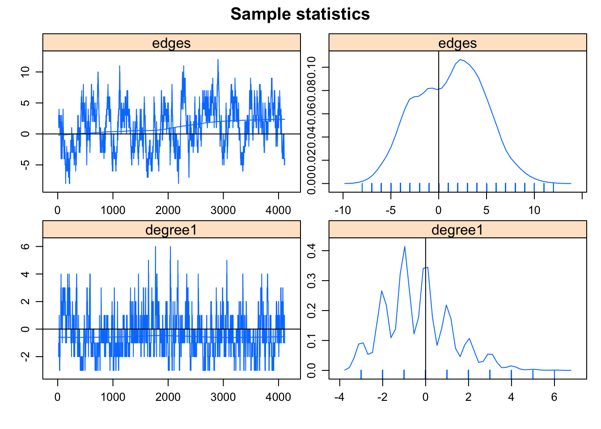
This runs a version with every network returned, and might be useful if you are trying to debug a bad model fit. (We’ll leave you to explore this object more on your own)
What it looks like when a model fails
Now let us look at a more problematic case, using a larger network:
data("faux.magnolia.high")
magnolia <- faux.magnolia.high
plot(magnolia, vertex.cex = 0.5)
summary(magnolia ~ edges + triangle) edges triangle
974 169 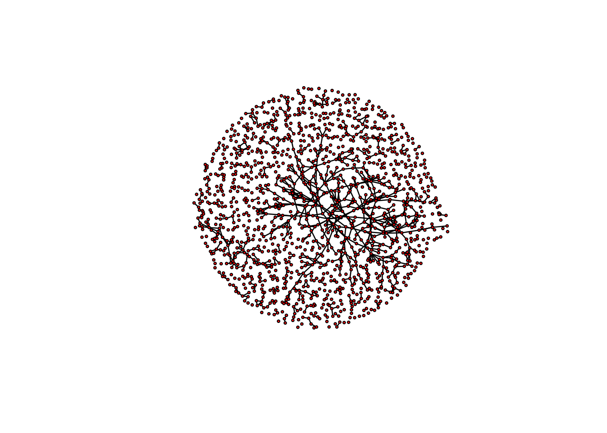
Very interesting. In the process of trying to fit this model, the algorithm heads off into networks that are much much more dense than the observed network. This is such a clear indicator of a degenerate model specification that the algorithm stops after 3 iterations, to avoid heading off into areas that would cause memory issues. If you’d like to peek a bit more under the hood, you can stop the algorithm earlier to catch where it’s heading:
fit.mag.01 <- ergm(magnolia ~ edges + triangle, control = control.ergm(MCMLE.maxit = 2))Starting maximum likelihood estimation via MCMLE:
Iteration 1 of at most 2:
The log-likelihood improved by 4.511
Iteration 2 of at most 2:
The log-likelihood improved by 3.049
Step length converged once. Increasing MCMC sample size.
Evaluating log-likelihood at the estimate. Using 20 bridges: 1 2 3 4 5 6 7 8 9 10 11 12 13 14 15 16 17 18 19 20 .
This model was fit using MCMC. To examine model diagnostics and check for degeneracy, use the mcmc.diagnostics() function.mcmc.diagnostics(fit.mag.01)Sample statistics summary:
Iterations = 16384:1063936
Thinning interval = 1024
Number of chains = 1
Sample size per chain = 1024
1. Empirical mean and standard deviation for each variable,
plus standard error of the mean:
Mean SD Naive SE Time-series SE
edges -56.04 36.00 1.125 9.297
triangle 24.81 46.82 1.463 36.744
2. Quantiles for each variable:
2.5% 25% 50% 75% 97.5%
edges -126.4 -80 -58 -33.75 21.85
triangle -33.0 -24 17 64.00 113.00
Sample statistics cross-correlations:
edges triangle
edges 1.0000000 0.6228593
triangle 0.6228593 1.0000000
Sample statistics auto-correlation:
Chain 1
edges triangle
Lag 0 1.0000000 1.0000000
Lag 1024 0.7712244 0.9968308
Lag 2048 0.6660393 0.9937181
Lag 3072 0.5886471 0.9905098
Lag 4096 0.5289459 0.9873489
Lag 5120 0.5101870 0.9841383
Sample statistics burn-in diagnostic (Geweke):
Chain 1
Fraction in 1st window = 0.1
Fraction in 2nd window = 0.5
edges triangle
-3.503 -4.237
Individual P-values (lower = worse):
edges triangle
4.607654e-04 2.264293e-05
Joint P-value (lower = worse): 0.006413381 .
MCMC diagnostics shown here are from the last round of simulation, prior to computation of final parameter estimates. Because the final estimates are refinements of those used for this simulation run, these diagnostics may understate model performance. To directly assess the performance of the final model on in-model statistics, please use the GOF command: gof(ergmFitObject, GOF=~model).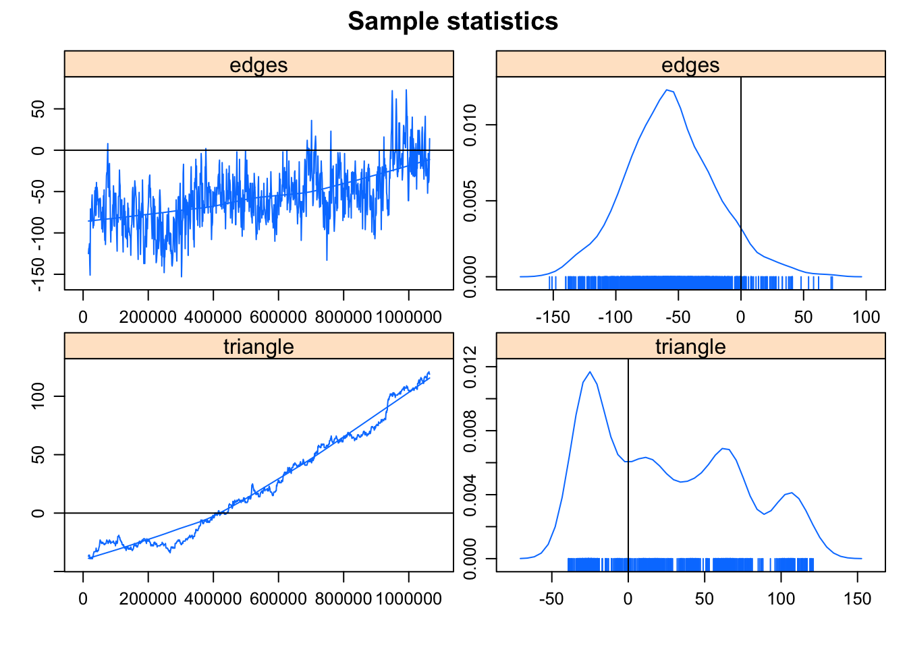
Clearly, somewhere very bad.
How about trying the more robust version of modeling triangles: the geometrically-weighed edgewise shared partner term (GWESP)? (For a technical introduction to GWESP see Hunter and Handcock, 2006; for a more intuitive description and empirical application see Goodreau, Kitts & Morris, 2009)
We fix the decay parameter here at 0.25 – it’s a reasonable starting place, but in this case we’ve actually constructed faux.magnolia with this parameter, so we know it’s also right.
(NB: You may want to try this and the following ergm calls with verbose output to see the stages of the estimation process:
fit.mag.02 <- ergm(magnolia ~ edges + gwesp(0.25, fixed = T))Starting maximum likelihood estimation via MCMLE:
Iteration 1 of at most 20:
The log-likelihood improved by 3.564
Iteration 2 of at most 20:
The log-likelihood improved by 1.178
Step length converged once. Increasing MCMC sample size.
Iteration 3 of at most 20:
The log-likelihood improved by 0.1367
Step length converged twice. Stopping.
Evaluating log-likelihood at the estimate. Using 20 bridges: 1 2 3 4 5 6 7 8 9 10 11 12 13 14 15 16 17 18 19 20 .
This model was fit using MCMC. To examine model diagnostics and check for degeneracy, use the mcmc.diagnostics() function.mcmc.diagnostics(fit.mag.02)Sample statistics summary:
Iterations = 16384:4209664
Thinning interval = 1024
Number of chains = 1
Sample size per chain = 4096
1. Empirical mean and standard deviation for each variable,
plus standard error of the mean:
Mean SD Naive SE Time-series SE
edges 17.26 37.20 0.5813 8.309
gwesp.fixed.0.25 15.31 29.97 0.4683 9.815
2. Quantiles for each variable:
2.5% 25% 50% 75% 97.5%
edges -54.00 -8.250 18.00 43.00 88.62
gwesp.fixed.0.25 -42.23 -6.286 17.71 37.94 67.65
Sample statistics cross-correlations:
edges gwesp.fixed.0.25
edges 1.0000000 0.7674097
gwesp.fixed.0.25 0.7674097 1.0000000
Sample statistics auto-correlation:
Chain 1
edges gwesp.fixed.0.25
Lag 0 1.0000000 1.0000000
Lag 1024 0.8238900 0.9952303
Lag 2048 0.7240452 0.9907141
Lag 3072 0.6667258 0.9863021
Lag 4096 0.6344507 0.9819042
Lag 5120 0.6103553 0.9775300
Sample statistics burn-in diagnostic (Geweke):
Chain 1
Fraction in 1st window = 0.1
Fraction in 2nd window = 0.5
edges gwesp.fixed.0.25
-2.808 -1.359
Individual P-values (lower = worse):
edges gwesp.fixed.0.25
0.004989919 0.174050349
Joint P-value (lower = worse): 0.3862988 .
MCMC diagnostics shown here are from the last round of simulation, prior to computation of final parameter estimates. Because the final estimates are refinements of those used for this simulation run, these diagnostics may understate model performance. To directly assess the performance of the final model on in-model statistics, please use the GOF command: gof(ergmFitObject, GOF=~model).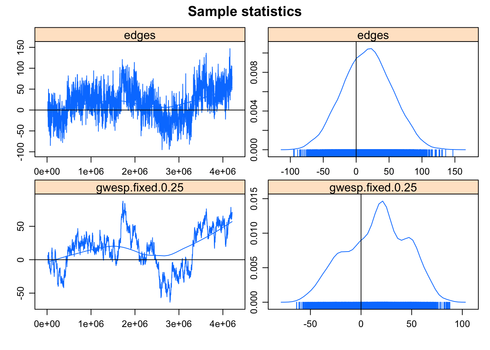
The MCMC diagnostics look somewhat better: the trend is gone, but there’s a fair amount of correlation in the samples, and convergence isn’t well established. Note the output says:
So let’s use gof to check the model statistics for the final estimates. To get both the numerical GOF summaries and the plots, we’ll create an object, print it, and then plot it.
gof.mag.02.model <- gof(fit.mag.02, GOF = ~model)
gof.mag.02.model
Goodness-of-fit for model statistics
obs min mean max MC p-value
edges 974.0000 842.000 951.7300 1032.0000 0.56
gwesp.fixed.0.25 375.3736 272.424 354.6785 413.3669 0.50plot(gof.mag.02.model)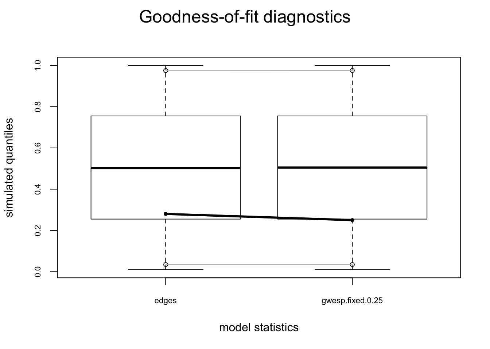
fit.mag.03 <- ergm(magnolia ~ edges + gwesp(0.25, fixed = T) + nodematch("Grade") +
nodematch("Race") + nodematch("Sex"), control = control.ergm(MCMC.interval = 20000),
eval.loglik = F)Starting maximum likelihood estimation via MCMLE:
Iteration 1 of at most 20:
The log-likelihood improved by 4.145
Iteration 2 of at most 20:
The log-likelihood improved by 0.3162
Step length converged once. Increasing MCMC sample size.
Iteration 3 of at most 20:
The log-likelihood improved by 0.00815
Step length converged twice. Stopping.
This model was fit using MCMC. To examine model diagnostics and check for degeneracy, use the mcmc.diagnostics() function.summary(fit.mag.03)
==========================
Summary of model fit
==========================
Formula: magnolia ~ edges + gwesp(0.25, fixed = T) + nodematch("Grade") +
nodematch("Race") + nodematch("Sex")
Iterations: 3 out of 20
Monte Carlo MLE Results:
Estimate Std. Error MCMC % p-value
edges -9.77531 0.10170 0 <1e-04 ***
gwesp.fixed.0.25 1.79190 0.04852 0 <1e-04 ***
nodematch.Grade 2.74762 0.08615 0 <1e-04 ***
nodematch.Race 0.90453 0.07194 0 <1e-04 ***
nodematch.Sex 0.76310 0.06037 0 <1e-04 ***
---
Signif. codes: 0 '***' 0.001 '**' 0.01 '*' 0.05 '.' 0.1 ' ' 1
Log-likelihood was not estimated for this fit.
To get deviances, AIC, and/or BIC from fit `fit.mag.03` run
> fit.mag.03<-logLik(fit.mag.03, add=TRUE)
to add it to the object or rerun this function with eval.loglik=TRUE.Clearly we’re not fitting the model statistics properly, so there’s no point in moving on to the GOF for the global statistics. There are two options at this point – one would be to modify the default MCMC parameters to see if this improves convergence, and the other would be to modify the model, since a mis-specified model will also show poor convergence. In this case, we’ll do both.
It’s reasonable to assume that triad-related processes are not the only factor influencing the pattern of ties we see in the data, so we’ll add some terms to the model to capture other dyad-independent effects that would be expected to influence tie status (homophily on the nodal covariates Grade, Race and Sex). In addition, given the serial correlation observed in the MCMC diagnostics from the previous model, we’ll also modify the MCMC defaults, and lengthen the interval between the networks selected for the MCMC sample (the default is 1024). The MCMC modifications will increase the estimation time, so we’ll cut the log likelihood estimation step.
mcmc.diagnostics(fit.mag.03)Sample statistics summary:
Iterations = 320000:82220000
Thinning interval = 20000
Number of chains = 1
Sample size per chain = 4096
1. Empirical mean and standard deviation for each variable,
plus standard error of the mean:
Mean SD Naive SE Time-series SE
edges 2.9172 47.99 0.7499 5.596
gwesp.fixed.0.25 1.1080 43.11 0.6736 5.651
nodematch.Grade 2.8096 45.37 0.7090 5.619
nodematch.Race 0.9968 42.41 0.6626 5.108
nodematch.Sex 2.4631 40.32 0.6300 6.199
2. Quantiles for each variable:
2.5% 25% 50% 75% 97.5%
edges -86.62 -31 1.0000 36.00 100.62
gwesp.fixed.0.25 -75.42 -30 -0.3571 28.94 91.05
nodematch.Grade -82.00 -30 1.0000 33.00 97.00
nodematch.Race -79.00 -29 0.0000 30.00 85.00
nodematch.Sex -71.62 -26 1.0000 29.25 84.62
Sample statistics cross-correlations:
edges gwesp.fixed.0.25 nodematch.Grade nodematch.Race
edges 1.0000000 0.8519087 0.9618344 0.9426249
gwesp.fixed.0.25 0.8519087 1.0000000 0.8698919 0.8350139
nodematch.Grade 0.9618344 0.8698919 1.0000000 0.9119458
nodematch.Race 0.9426249 0.8350139 0.9119458 1.0000000
nodematch.Sex 0.9092443 0.8059946 0.8845850 0.8588035
nodematch.Sex
edges 0.9092443
gwesp.fixed.0.25 0.8059946
nodematch.Grade 0.8845850
nodematch.Race 0.8588035
nodematch.Sex 1.0000000
Sample statistics auto-correlation:
Chain 1
edges gwesp.fixed.0.25 nodematch.Grade nodematch.Race
Lag 0 1.0000000 1.0000000 1.0000000 1.0000000
Lag 20000 0.7277275 0.9601395 0.7736255 0.7438226
Lag 40000 0.6975516 0.9277600 0.7427483 0.7125073
Lag 60000 0.6750539 0.8983091 0.7174272 0.6904965
Lag 80000 0.6460650 0.8720431 0.6958066 0.6706815
Lag 1e+05 0.6279614 0.8491996 0.6802818 0.6481285
nodematch.Sex
Lag 0 1.0000000
Lag 20000 0.7447858
Lag 40000 0.7137630
Lag 60000 0.6978075
Lag 80000 0.6767955
Lag 1e+05 0.6647371
Sample statistics burn-in diagnostic (Geweke):
Chain 1
Fraction in 1st window = 0.1
Fraction in 2nd window = 0.5
edges gwesp.fixed.0.25 nodematch.Grade nodematch.Race
1.839 1.797 1.777 2.039
nodematch.Sex
1.645
Individual P-values (lower = worse):
edges gwesp.fixed.0.25 nodematch.Grade nodematch.Race
0.06585780 0.07241274 0.07550659 0.04144932
nodematch.Sex
0.09997024
Joint P-value (lower = worse): 0.1028438 .
MCMC diagnostics shown here are from the last round of simulation, prior to computation of final parameter estimates. Because the final estimates are refinements of those used for this simulation run, these diagnostics may understate model performance. To directly assess the performance of the final model on in-model statistics, please use the GOF command: gof(ergmFitObject, GOF=~model).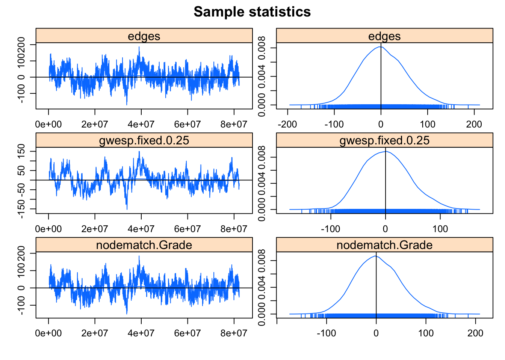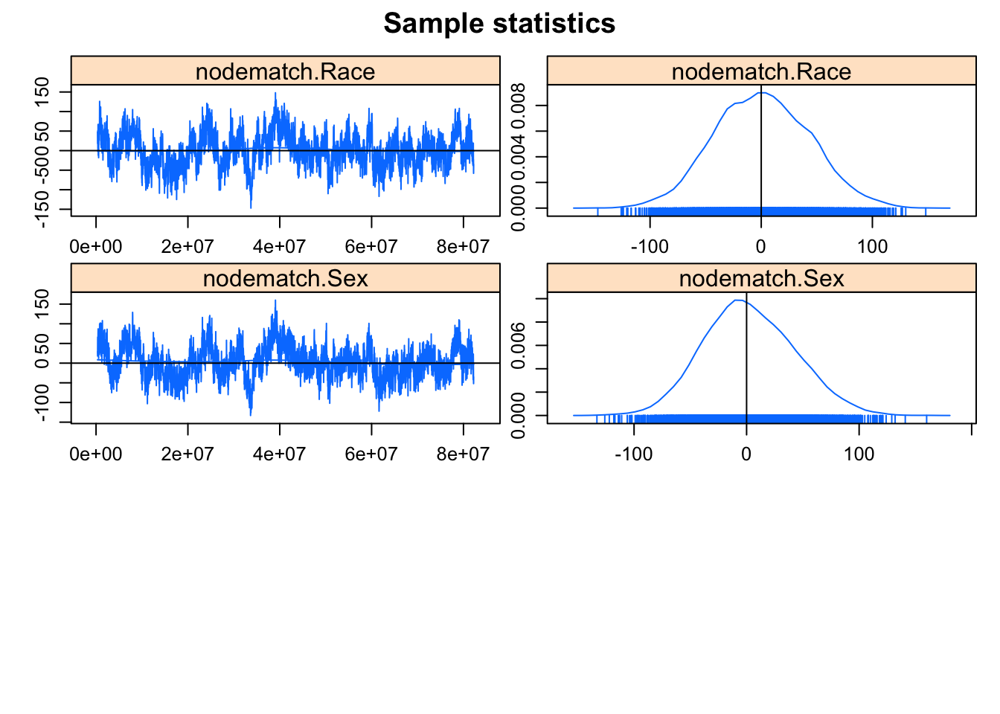
The MCMC diagnostics look much better. Let’s take a look at the GOF for model statistics (upping the default number of simulations to 200 from 100).
plot(gof(fit.mag.03, GOF = ~model, control = control.gof.ergm(nsim = 200)))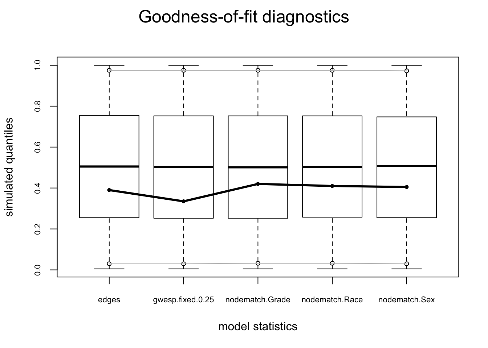
The model statistics look ok, so let’s move on to the global GOF statistics.
plot(gof(fit.mag.03, GOF = ~degree + esp + distance))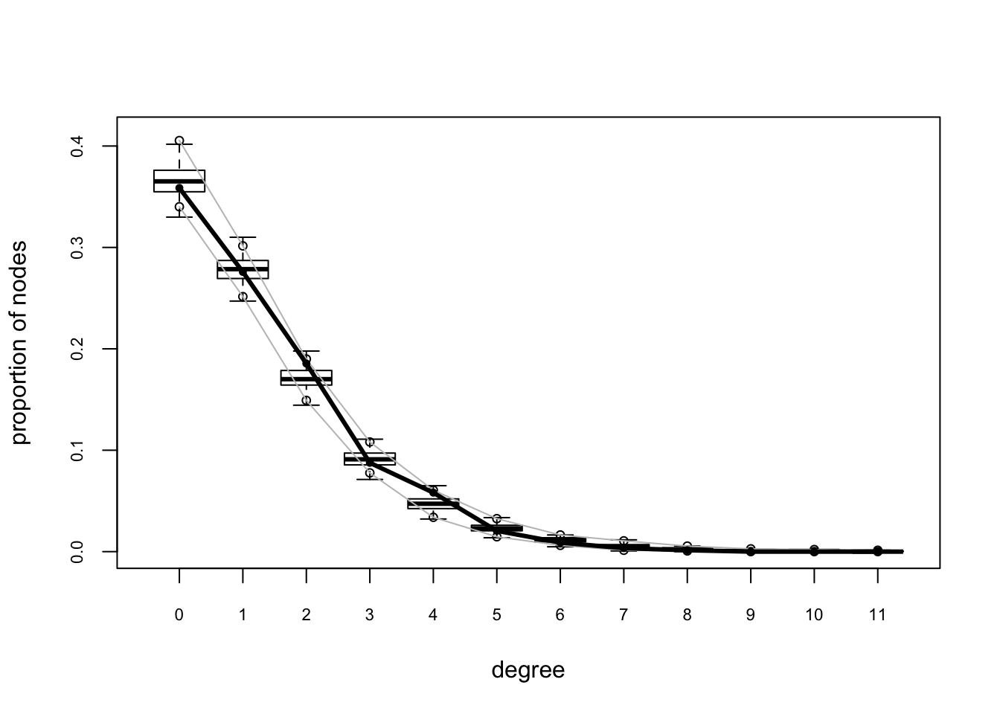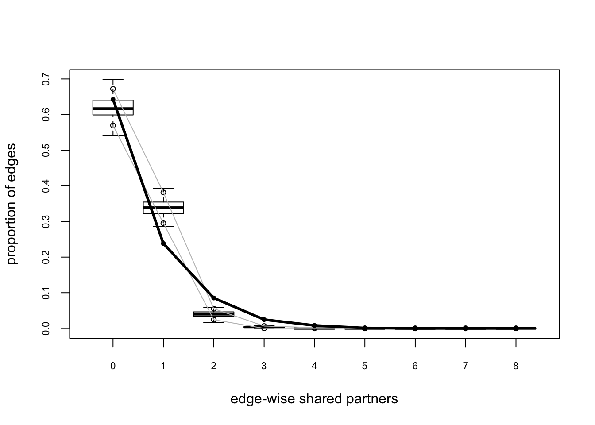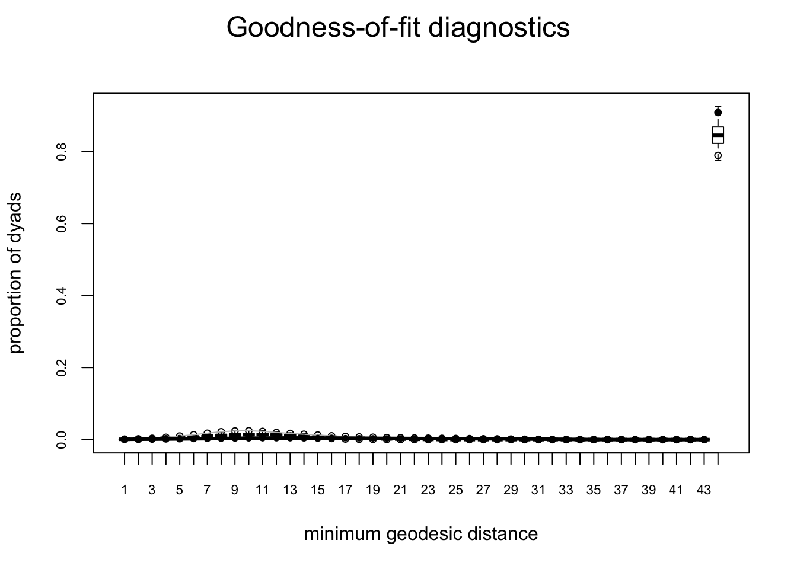
The global GOF stats look pretty good too. Of course, in real life one might have a lot more trial and error.
MORAL: Degeneracy is an indicator of a poorly specified model. It is not a property of all ERGMs, but it is associated with some dyadic-dependent terms, in particular, the reduced homogenous Markov specifications (e.g., 2-stars and triangle terms). For a good technical discussion of unstable terms see Schweinberger 2012. For a discussion of alternative terms that exhibit more stable behavior see Snijders et al. 2006. and for the gwesp term (and the curved exponential family terms in general) see Hunter and Handcock 2006.
Statnet Commons
- Mark S. Handcock handcock@stat.ucla.edu
- David R. Hunter dhunter@stat.psu.edu
- Carter T. Butts buttsc@uci.edu
- Steven M. Goodreau goodreau@u.washington.edu
- Skye Bender-deMoll skyebend@skyeome.net
- Martina Morris morrism@u.washington.edu
- Pavel N. Krivitsky pavel@uow.edu.au
Appendix A: Clarifying the terms
You will see the terms ergm and network used in multiple contexts throughout the documentation. This is common in R, but often confusing to newcomers. To clarify:
ergm
ERGM: the acronym for an Exponential Random Graph Model; a statistical model for relational data that takes a generalized exponential family form.
ergm package: one of the packages within the statnet suite
ergm function: a function within the ergm package; fits an ERGM to a network object, creating an ergm object in the process.
ergm object: a class of objects produced by a call to the ergm function, representing the results of an ERGM fit to a network.
network
- network: a set of actors and the relations among them. Used interchangeably with the term graph.
- network package: one of the packages within the statnet suite; used to create, store, modify and plot the information found in network objects.
- network object: a class of object in R used to represent a network.
References
The best primer on the basics of the statnet packages is the special issue of the Journal of Statistical Software v24 (2008): Some of the papers from that issue are noted below.
Goodreau, S., J. Kitts and M. Morris (2009). Birds of a Feather, or Friend of a Friend? Using Statistical Network Analysis to Investigate Adolescent Social Networks. Demography 46(1): 103-125. link
Handcock MS (2003a). “Assessing Degeneracy in Statistical Models of Social Networks.” Working Paper 39, Center for Statistics and the Social Sciences, University of Washington. link
Handcock MS (2003b). “Statistical Models for Social Networks: Inference and Degeneracy.” In R Breiger, K Carley, P Pattison (eds.), Dynamic Social Network Modeling and Analysis, volume 126, pp. 229-252. Committee on Human Factors, Board on Behavioral, Cognitive, and Sensory Sciences, National Academy Press, Washington, DC.
Handcock, M. S., D. R. Hunter, C. T. Butts, S. M. Goodreau and M. Morris (2008). statnet: Software Tools for the Representation, Visualization, Analysis and Simulation of Network Data. Journal of Statistical Software 42(01).
Hunter DR, Handcock MS, Butts CT, Goodreau SM, Morris M (2008b). ergm: A Package to Fit, Simulate and Diagnose Exponential-Family Models for Networks. Journal of Statistical Software, 24(3).
Krivitsky, P.N., Handcock, M.S,(2014). A separable model for dynamic networks JRSS Series B-Statistical Methodology, 76(1):29-46; 10.1111/rssb.12014.
Krivitsky, P. N., M. S. Handcock and M. Morris (2011). Adjusting for Network Size and Composition Effects in Exponential-family Random Graph Models, Statistical Methodology 8(4): 319-339, ISSN 1572-3127.
Schweinberger, Michael (2011) Instability, Sensitivity, and Degeneracy of Discrete Exponential Families JASA 106(496): 1361-1370.
Snijders, TAB et al (2006) New Specifications For Exponential Random Graph Models Sociological Methodology 36(1): 99-153.